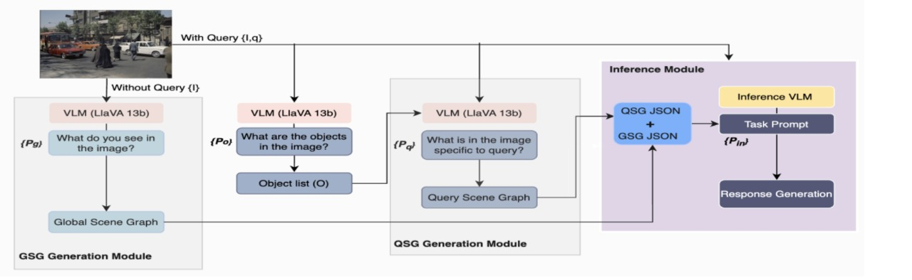
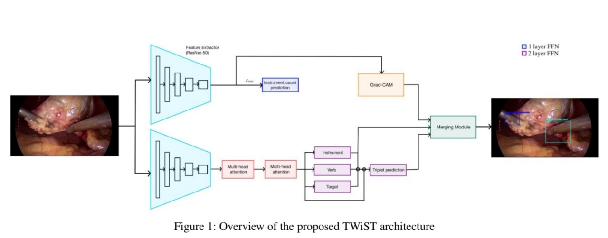
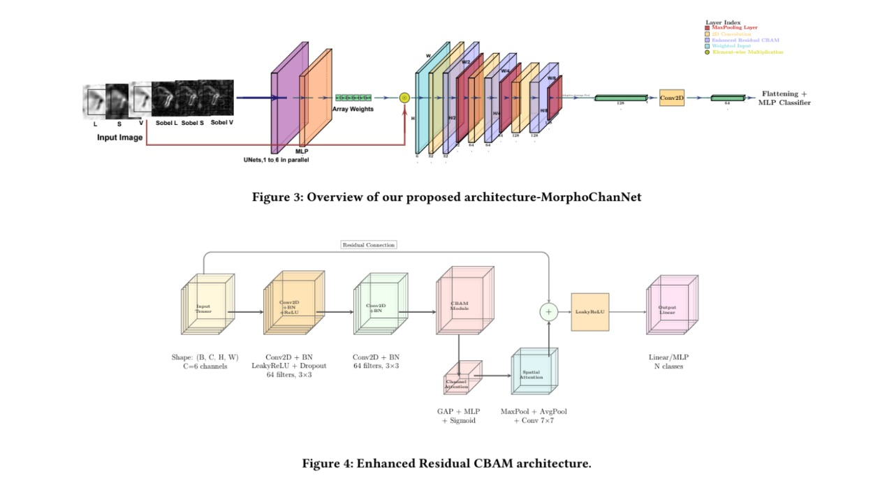

Publications
Research
Peer-reviewed work in vision-language reasoning, surgical video understanding, and medical imaging.
2025 & 2026

TWIST: Temporal Weakly-Supervised Triplets Recognition in Surgical Videos

Weighted Color-Morphology Feature Fusion for Tuberculosis Bacilli Detection from Cytopathology Images
· ICVGIP 2025, Indian Conference on Computer Vision, Graphics & Image Processing